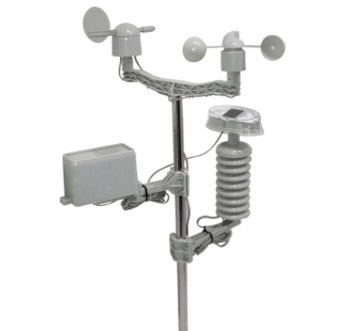

UNIVERSIDAD NACIONAL DE CHIMBORAZO.
FACULTAD DE INGENIERÍA.
CARRERA DE ELECTRÓNICA Y TELECOMUNICACIONES.
Estación Meteorológica.

Velocidad del viento.
Dirección del viento.
Temperatura.
Luz.
Humedad.
0
0
0
0
0